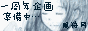

風待月へようこそ。
此処は十二国記は戴国（というか泰麒）中心のイラスト置き場です。
もしかすると、他の版権イラストも置くかもしれません。
=十二国記=
-color-
■ ■ ■ ■ ■ ■ ■ ■ ■ ■ ■ ■ ■ □ □
-mono-
○ ○ ○ ○ ○ ○ ○ ○ ○ ○ ○ ○
+本館+
オリジナル水彩絵サイト
IE5以上 / 600*800
無断転載・複製禁止
© I . Niwazakura
since 03.3.30
|
＝= 風 待 月 =＝ 風待月へようこそ。 此処は十二国記は戴国（というか泰麒）中心のイラスト置き場です。 もしかすると、他の版権イラストも置くかもしれません。 =十二国記= -color- ■ ■ ■ ■ ■ ■ ■ ■ ■ ■ ■ ■ ■ □ □ -mono- ○ ○ ○ ○ ○ ○ ○ ○ ○ ○ ○ ○ |
|
 +本館+
オリジナル水彩絵サイト
IE5以上 / 600*800 無断転載・複製禁止 © I . Niwazakura since 03.3.30 |